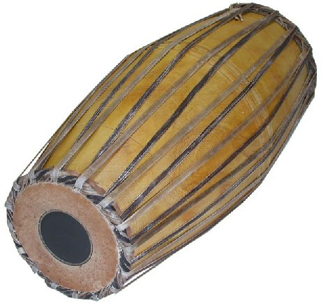

Alex McLean
Algorithmic Patterns with Strudel
Then Try This
## Software environments * TidalCycles (Haskell) and Strudel (JavaScript) * I'll refer to them interchangeably * Both popular live coding environments * Performing with (musical) patterns as pure functions of time --- ## Aim * Designing new support for stepwise pattern-making within cyclic talas * Inspired by South Indian, Carnatic music, specifically Konnakol --- ## Konnakol <iframe width="560" height="315" src="https://www.youtube.com/embed/-mS06lEmY3s?si=2oak40zrgLQiS8w_&start=115" title="YouTube video player" frameborder="0" allow="accelerometer; autoplay; clipboard-write; encrypted-media; gyroscope; picture-in-picture; web-share" referrerpolicy="strict-origin-when-cross-origin" allowfullscreen></iframe> B C Manjunath and Varijashree Venugopal --- ## Konnakol * Developed since around 200CE * Non-lexical syllables related to strokes of the Mridangam drum 
Solkattu
Tha
Tha ka
Tha ki ta
Tha ka dhi mi
Tha di gi na thom
Tha dim - gi na thom
Tha - dim - gi na thom
Tha dim - gi - na - thom
Tha - dim - gi - na - thom
## Clapping the tala --- ## Grouping in Misra Chapu tala --- ## Yati in Rupaka tala --- ## From Cyclewise to stepwise --- ## Design issues --- ## Types --- ## Attempt one: split pattern into two-instance typeclass * One for function of time, one for data struction --- ## Attempt two: function with metadata --- ## Livecoding as Oral Tradition? <q>In all Indian musical traditions, learning, rationalization and sharing are part of an internal process within and between artists. The magnificence of this non-scribal technique is the acceptance of diversity and the possibility of continuous musical change. […] At no point is the music etched in stone, trapped in time, a stone tablet of commandments.</q>